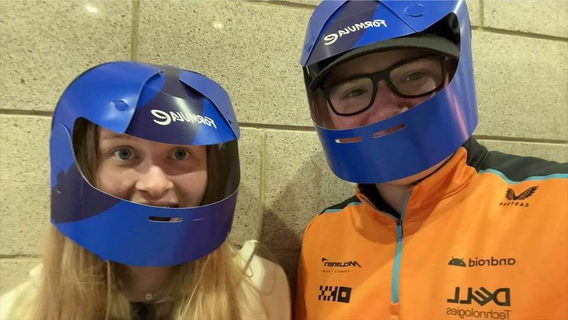
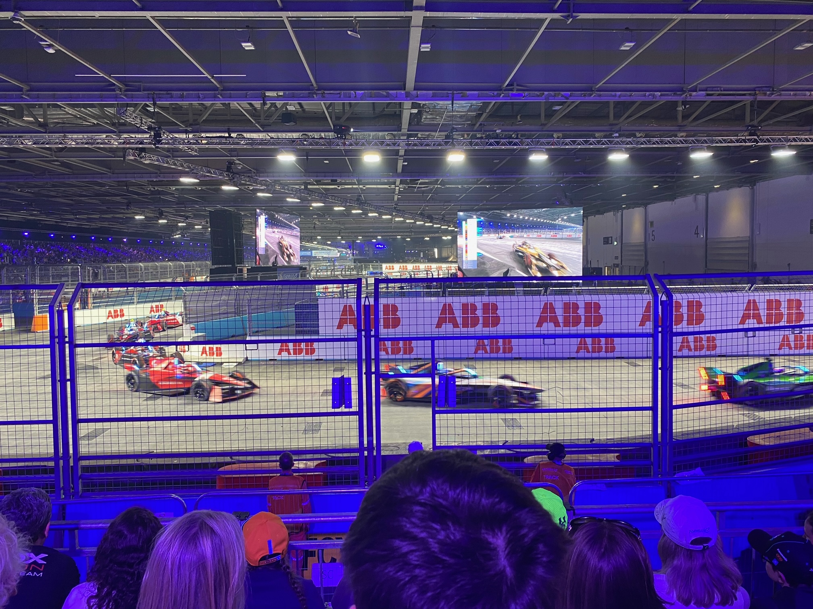

We woke up in beautiful Romford, with everyone getting at least 10 hours sleep to get us back to UK time. Greggs for breakfast and bags left at the hotel, we got the super new Elizabeth Line into London. Me and the kids swapped onto another train to get to ExCeL while Alison carried on to the city.
We arrived at the Formula E entrance pretty much when we planned and got in very easily, straight into the Fan Village, which was a massive space with loads of things to do. We had last been in this building to watch the Paralympics more than a decade ago. We got our bearings, wandered around and then found our seats for qualifying (after I had my first Costa coffee in 3 weeks).
We had great seats, where we could see the last indoor corner and the entrance to the first outdoor corner. In the distance, we could see the pit exit. There was also a massive screen in front of us so that we could follow the overall competition. Qualifying was pretty exciting, with the duels they have for pole position. The results put the 3 potential champions near the front for the race.
We got ourselves some food from one of the many options. There was a concert in the Fan Village, by Ella Eyre (she was successful with “Just Got Paid” about 8 years ago), who sang some covers and her own songs. The bass was excessive, so we watched the concert from our seats while we ate.
The cars in the Fan Village were cool, as was the Scalextric and simulators. The merchandise was expensive and the DJ too loud (and a bit annoying). After a walk along the stand opposite the pit lane and collecting paper helmets, we went back to our seats to watch the F1 Sprint on Jake’s phone. The weather in Spa meant we only got to see the first few laps before the Formula E race start show happened. They were dancers, Ella Eyre again. And fireworks.

The race itself was very exciting. In order to win the Championship, the British driver Jake Dennis needed to outscore two other drivers by a certain amount. His main rival, Nick Cassidy, was ahead of him as was Cassidy’s teammate, Buemi. Following some unclear team instructions, the teammates managed to crash into each other, right in front of us, with an almighty bang. Cassidy limped around to the pits to get some bits but was last. The crowd cheered.

There were plenty more bangs in front of us and cars driving round with missing front wings and rear lights. There was then a big crash outside, which led to a safety car and then a red flag while they fixed a barrier. That meant another start, which meant more bangs and more wing damage. A McLaren went up on 2 wheels in front of us, which me and Jake didn’t see as we were watching a potential overtake on the next corner. Freya caught it and posted it on Instagram. It was looking good for Jake Dennis to win the overall championship and then with 2 laps to go there was a 14-car pile-up and so another red flag. Not much action in those final laps. The end result meant Jake Dennis was the champion. Hooray!
The overall Formula E experience was excellent, in terms of the racing, the organisation and the Fan Village. Would definitely go again.
Alison spent the day in London. She was trying to avoid US shops, but wasn’t entirely successful. She bought some presents and she said the day dragged less than she expected. Back to Romford and then home, back before midnight.
Busy day! Busy three weeks! Hope you enjoyed the ride.